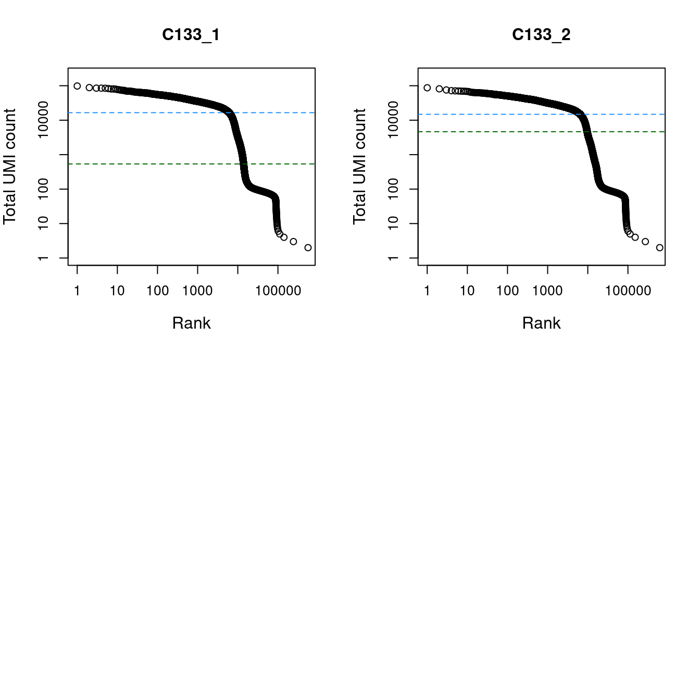

Last updated: 2022-12-15
Checks: 7 0
Knit directory:
paed-cf-cite-seq/
This reproducible R Markdown analysis was created with workflowr (version 1.7.0). The Checks tab describes the reproducibility checks that were applied when the results were created. The Past versions tab lists the development history.
Great! Since the R Markdown file has been committed to the Git repository, you know the exact version of the code that produced these results.
Great job! The global environment was empty. Objects defined in the global environment can affect the analysis in your R Markdown file in unknown ways. For reproduciblity it’s best to always run the code in an empty environment.
The command set.seed(20210524) was run prior to running the code in the R Markdown file.
Setting a seed ensures that any results that rely on randomness, e.g.
subsampling or permutations, are reproducible.
Great job! Recording the operating system, R version, and package versions is critical for reproducibility.
Nice! There were no cached chunks for this analysis, so you can be confident that you successfully produced the results during this run.
Great job! Using relative paths to the files within your workflowr project makes it easier to run your code on other machines.
Great! You are using Git for version control. Tracking code development and connecting the code version to the results is critical for reproducibility.
The results in this page were generated with repository version 916bafa. See the Past versions tab to see a history of the changes made to the R Markdown and HTML files.
Note that you need to be careful to ensure that all relevant files for the
analysis have been committed to Git prior to generating the results (you can
use wflow_publish or wflow_git_commit). workflowr only
checks the R Markdown file, but you know if there are other scripts or data
files that it depends on. Below is the status of the Git repository when the
results were generated:
Ignored files:
Ignored: .Rhistory
Ignored: .Rproj.user/
Ignored: analysis/obsolete/
Ignored: code/obsolete/
Ignored: data/190930_A00152_0150_BHTYCMDSXX/
Ignored: data/CellRanger/
Ignored: data/GSE127465_RAW/
Ignored: data/Homo_sapiens.gene_info
Ignored: data/SCEs/02_ZILIONIS.sct_normalised.SEU.rds
Ignored: data/SCEs/03_C133_Neeland.demultiplexed.SCE.rds
Ignored: data/SCEs/03_C133_Neeland.emptyDrops.SCE.rds
Ignored: data/SCEs/03_C133_Neeland.preprocessed.SCE.rds
Ignored: data/SCEs/03_CF_BAL_Pilot.CellRanger_v6.SCE.rds
Ignored: data/SCEs/03_CF_BAL_Pilot.emptyDrops.SCE.rds
Ignored: data/SCEs/03_CF_BAL_Pilot.preprocessed.SCE.rds
Ignored: data/SCEs/03_COMBO.clustered.SEU.rds
Ignored: data/SCEs/03_COMBO.clustered_annotated_macrophages_diet.SEU.rds
Ignored: data/SCEs/03_COMBO.clustered_annotated_others_diet.SEU.rds
Ignored: data/SCEs/03_COMBO.clustered_annotated_tcells_diet.SEU.rds
Ignored: data/SCEs/03_COMBO.clustered_diet.SEU.rds
Ignored: data/SCEs/03_COMBO.integrated.SEU.rds
Ignored: data/SCEs/03_COMBO.zilionis_mapped.SEU.rds
Ignored: data/SCEs/04_C133_Neeland.adt_dsb_normalised.rds
Ignored: data/SCEs/04_C133_Neeland.adt_integrated.rds
Ignored: data/SCEs/04_C133_Neeland.all_integrated.SEU.rds
Ignored: data/SCEs/04_CF_BAL_Pilot.CellRanger_v6.SCE.rds
Ignored: data/SCEs/04_CF_BAL_Pilot.emptyDrops.SCE.rds
Ignored: data/SCEs/04_CF_BAL_Pilot.preprocessed.SCE.rds
Ignored: data/SCEs/04_CF_BAL_Pilot.transfer_adt.SEU.rds
Ignored: data/SCEs/04_COMBO.clean_clustered.SEU.rds
Ignored: data/SCEs/04_COMBO.clean_clustered.SEU_bk.rds
Ignored: data/SCEs/04_COMBO.clean_integrated.SEU.rds
Ignored: data/SCEs/04_COMBO.clean_integrated.SEU_bk.rds
Ignored: data/SCEs/04_COMBO.clean_macrophages_diet.SEU.rds
Ignored: data/SCEs/04_COMBO.clean_others_diet.SEU.rds
Ignored: data/SCEs/04_COMBO.clean_tcells_diet.SEU.rds
Ignored: data/SCEs/04_COMBO.clustered.SEU.rds
Ignored: data/SCEs/04_COMBO.clustered_annotated_adt_diet.SEU.rds
Ignored: data/SCEs/04_COMBO.clustered_annotated_lung_diet.SEU.rds
Ignored: data/SCEs/04_COMBO.clustered_annotated_macrophages_diet.SEU.rds
Ignored: data/SCEs/04_COMBO.clustered_annotated_others_diet.SEU.rds
Ignored: data/SCEs/04_COMBO.clustered_annotated_tcells_diet.SEU.rds
Ignored: data/SCEs/04_COMBO.clustered_diet.SEU.rds
Ignored: data/SCEs/04_COMBO.integrated.SEU.rds
Ignored: data/SCEs/04_COMBO.macrophages_clustered.SEU.rds
Ignored: data/SCEs/04_COMBO.macrophages_integrated.SEU.rds
Ignored: data/SCEs/04_COMBO.others_clustered.SEU.rds
Ignored: data/SCEs/04_COMBO.others_integrated.SEU.rds
Ignored: data/SCEs/04_COMBO.tcells_clustered.SEU.rds
Ignored: data/SCEs/04_COMBO.tcells_integrated.SEU.rds
Ignored: data/SCEs/04_COMBO.zilionis_mapped.SEU.rds
Ignored: data/SCEs/05_CF_BAL_Pilot.transfer_adt.SEU.rds
Ignored: data/SCEs/05_COMBO.clean_clustered.SEU.rds
Ignored: data/SCEs/05_COMBO.clean_integrated.SEU.rds
Ignored: data/SCEs/05_COMBO.clean_macrophages_diet.SEU.rds
Ignored: data/SCEs/05_COMBO.clean_others_diet.SEU.rds
Ignored: data/SCEs/05_COMBO.clean_tcells_diet.SEU.rds
Ignored: data/SCEs/05_COMBO.clustered_annotated_adt_diet.SEU.rds
Ignored: data/SCEs/05_COMBO.clustered_annotated_lung_diet.SEU.rds
Ignored: data/SCEs/05_COMBO.clustered_annotated_macrophages_diet.SEU.rds
Ignored: data/SCEs/05_COMBO.clustered_annotated_others_diet.SEU.rds
Ignored: data/SCEs/05_COMBO.clustered_annotated_tcells_diet.SEU.rds
Ignored: data/SCEs/05_COMBO.macrophages_clustered.SEU.rds
Ignored: data/SCEs/05_COMBO.macrophages_integrated.SEU.rds
Ignored: data/SCEs/05_COMBO.others_clustered.SEU.rds
Ignored: data/SCEs/05_COMBO.others_integrated.SEU.rds
Ignored: data/SCEs/05_COMBO.tcells_clustered.SEU.rds
Ignored: data/SCEs/05_COMBO.tcells_integrated.SEU.rds
Ignored: data/SCEs/06_COMBO.clean_clustered.DIET.rds
Ignored: data/SCEs/06_COMBO.clean_clustered.SEU.rds
Ignored: data/SCEs/06_COMBO.clean_integrated.SEU.rds
Ignored: data/SCEs/06_COMBO.clean_macrophages_diet.SEU.rds
Ignored: data/SCEs/06_COMBO.clean_others_diet.SEU.rds
Ignored: data/SCEs/06_COMBO.clean_tcells_diet.SEU.rds
Ignored: data/SCEs/06_COMBO.macrophages_clustered.SEU.rds
Ignored: data/SCEs/06_COMBO.macrophages_clustered_dbl.SEU.rds
Ignored: data/SCEs/06_COMBO.macrophages_integrated.SEU.rds
Ignored: data/SCEs/06_COMBO.macrophages_integrated_dbl.SEU.rds
Ignored: data/SCEs/06_COMBO.others_clustered.SEU.rds
Ignored: data/SCEs/06_COMBO.others_integrated.SEU.rds
Ignored: data/SCEs/06_COMBO.tcells_clustered.SEU.rds
Ignored: data/SCEs/06_COMBO.tcells_integrated.SEU.rds
Ignored: data/SCEs/07_COMBO.macrophages_clustered.SEU.rds
Ignored: data/SCEs/07_COMBO.macrophages_integrated.SEU.rds
Ignored: data/SCEs/C133_Neeland.CellRanger.SCE.rds
Ignored: data/SCEs/experiment1_doublets.rds
Ignored: data/SCEs/experiment2_doublets.rds
Ignored: data/SCEs/obsolete/
Ignored: data/cellsnp-lite/
Ignored: data/emptyDrops/obsolete/
Ignored: data/obsolete/
Ignored: data/sample_sheets/obsolete/
Ignored: output/marker-analysis/obsolete/
Ignored: output/obsolete/
Ignored: rename_captures.R
Ignored: renv/library/
Ignored: renv/staging/
Ignored: wflow_background.R
Untracked files:
Untracked: output/marker-analysis/06-COMBO-macrophages/
Unstaged changes:
Modified: .gitignore
Modified: .renvignore
Modified: analysis/index.Rmd
Modified: renv/.gitignore
Modified: renv/settings.dcf
Note that any generated files, e.g. HTML, png, CSS, etc., are not included in this status report because it is ok for generated content to have uncommitted changes.
These are the previous versions of the repository in which changes were made
to the R Markdown (analysis/03_C133_Neeland.emptyDrops.Rmd) and HTML (docs/03_C133_Neeland.emptyDrops.html)
files. If you’ve configured a remote Git repository (see
?wflow_git_remote), click on the hyperlinks in the table below to
view the files as they were in that past version.
| File | Version | Author | Date | Message |
|---|---|---|---|---|
| Rmd | 916bafa | Jovana Maksimovic | 2022-12-15 | wflow_publish(c("analysis/.emptyDrops.Rmd", "analysis/postprocess_*.Rmd", |
| Rmd | f3b7b92 | Jovana Maksimovic | 2022-06-16 | Submission version |
| html | f3b7b92 | Jovana Maksimovic | 2022-06-16 | Submission version |
Bronchoalveolar lavage (BAL) samples were collected from 8 individuals with cystic fibrosis (CF). The samples were run on the 10X Chromium and sequenced by the Cellular Genomics Project Team at the WEHI Advanced Genomics Facility. After sequencing, expression was quantified by aligning, filtering, barcode counting, and counting the number of UMIs mapped to each gene using CellRanger v5.0.0. Version 2020-A (July 7, 2020) of the CellRanger reference files was used, which maps against the GRCh38 of the reference genome and quantifies expression using gene models from GENCODE v32/Ensembl 98.
View the CellRanger overall, read depth normalised and capture-specific web summaries: C133_1, C133_2.
View the MultiQC report.
suppressPackageStartupMessages(library(BiocStyle))
suppressPackageStartupMessages(library(tidyverse))
suppressPackageStartupMessages(library(here))
suppressPackageStartupMessages(library(glue))
suppressPackageStartupMessages(library(DropletUtils))
suppressPackageStartupMessages(library(scran))
suppressPackageStartupMessages(library(scater))
suppressPackageStartupMessages(library(scuttle))
suppressPackageStartupMessages(library(scds))
suppressPackageStartupMessages(library(scDblFinder))
set.seed(42)
options(scipen=999)
options(future.globals.maxSize = 6500 * 1024^2)sce <- readRDS(here("data/SCEs/C133_Neeland.CellRanger.SCE.rds"))
dim(sce)[1] 36601 13589760# Preparing HTO data -----------------------------------------------------------
is_hto <- rownames(altExp(sce, "Antibody Capture")) %in%
paste0("Human_HTO_", 1:8)
altExp(sce, "HTO") <- altExp(sce, "Antibody Capture")[is_hto, ]
altExp(sce, "ADT") <- altExp(sce, "Antibody Capture")[!is_hto, ]
altExp(sce, "Antibody Capture") <- NULL
expSum <- colSums(counts(sce))
htoSum <- colSums(counts(altExp(sce, "HTO")))
adtSum <- colSums(counts(altExp(sce, "ADT")))
dat <- data.frame(exp = expSum, hto = htoSum, adt = adtSum)We use the emptyDrops() function from the DropletUtils package to test whether the expression profile for each cell barcode is significantly different from the ambient RNA pool (Lun et al. 2018). A significant deviation indicates that the barcode corresponds to a cell-containing droplet. Cells are called at a false discovery rate (FDR) of 0.1%.
sce$capture <- factor(sce$Sample)
capture_names <- levels(sce$capture)
capture_names <- setNames(capture_names, capture_names)
empties <- do.call(rbind, lapply(capture_names, function(cn) {
message(cn)
empties <- readRDS(
here("data", "emptyDrops", paste0(cn, ".emptyDrops.rds")))
empties$capture <- cn
empties
}))
tapply(
empties$FDR,
empties$capture,
function(x) sum(x <= 0.001, na.rm = TRUE)) %>%
knitr::kable(
caption = "Number of non-empty droplets identified using `emptyDrops()` from **DropletUtils**.")| x | |
|---|---|
| C133_1 | 11900 |
| C133_2 | 12928 |
par(mfrow = c(2, 2))
lapply(levels(sce$capture), function(s) {
sce <- sce[, sce$capture == s]
bcrank <- barcodeRanks(counts(sce))
# Only showing unique points for plotting speed.
uniq <- !duplicated(bcrank$rank)
plot(
x = bcrank$rank[uniq],
y = bcrank$total[uniq],
log = "xy",
xlab = "Rank",
ylab = "Total UMI count",
main = s,
cex.lab = 1.2,
xlim = c(1, 500000),
ylim = c(1, 200000))
abline(h = metadata(bcrank)$inflection, col = "darkgreen", lty = 2)
abline(h = metadata(bcrank)$knee, col = "dodgerblue", lty = 2)
})[[1]]
NULL
[[2]]
NULL
| Version | Author | Date |
|---|---|---|
| f3b7b92 | Jovana Maksimovic | 2022-06-16 |
Remove empty droplets.
sce <- sce[, which(empties$FDR <= 0.001)]
sceclass: SingleCellExperiment
dim: 36601 24828
metadata(1): Samples
assays(1): counts
rownames(36601): ENSG00000243485 ENSG00000237613 ... ENSG00000278817
ENSG00000277196
rowData names(3): ID Symbol Type
colnames(24828): 1_AAACCCACACTTCCTG-1 1_AAACCCACAGACAAAT-1 ...
2_TTTGTTGTCATTGGTG-1 2_TTTGTTGTCGATGGAG-1
colData names(3): Sample Barcode capture
reducedDimNames(0):
mainExpName: NULL
altExpNames(2): HTO ADTUse scds and scDblFinder to try to identify homogenic doublets. Doublets are called on each capture separately.
out <- here("data/SCEs/experiment2_doublets.rds")
if(!file.exists(out)){
sceLst <- sapply(levels(sce$capture), function(cap){
## Annotate doublets using scds three step process as run in Demuxafy
sce1 <- bcds(sce[, sce$capture == cap],
retRes = TRUE, estNdbl = TRUE)
sce1 <- cxds(sce1, retRes = TRUE, estNdbl = TRUE)
sce1 <- cxds_bcds_hybrid(sce1, estNdbl = TRUE)
## Annotate doublets using scDblFInder with rate estimate from Demuxafy
sce1 <- scDblFinder(sce1, dbr = ncol(sce1)/1000*0.008)
sce1
})
lapply(sceLst, function(s){
colData(s) %>%
data.frame %>%
rownames_to_column(var = "cell")
}) %>%
bind_rows() %>%
saveRDS(file = out)
} Save the object.
out <- here("data/SCEs/03_C133_Neeland.emptyDrops.SCE.rds")
if (!file.exists(out)) saveRDS(sce, file = out)sessioninfo::session_info()─ Session info ───────────────────────────────────────────────────────────────
setting value
version R version 4.1.0 (2021-05-18)
os CentOS Linux 7 (Core)
system x86_64, linux-gnu
ui X11
language (EN)
collate en_AU.UTF-8
ctype en_AU.UTF-8
tz Australia/Melbourne
date 2022-12-15
pandoc 2.17.1.1 @ /usr/lib/rstudio-server/bin/quarto/bin/ (via rmarkdown)
─ Packages ───────────────────────────────────────────────────────────────────
! package * version date (UTC) lib source
P assertthat 0.2.1 2019-03-21 [?] CRAN (R 4.1.0)
P backports 1.4.1 2021-12-13 [?] CRAN (R 4.1.0)
P beachmat 2.10.0 2021-10-26 [?] Bioconductor
P beeswarm 0.4.0 2021-06-01 [?] CRAN (R 4.1.0)
P Biobase * 2.54.0 2021-10-26 [?] Bioconductor
P BiocGenerics * 0.40.0 2021-10-26 [?] Bioconductor
P BiocManager 1.30.16 2021-06-15 [?] CRAN (R 4.1.0)
P BiocNeighbors 1.12.0 2021-10-26 [?] Bioconductor
P BiocParallel 1.28.3 2021-12-09 [?] Bioconductor
P BiocSingular 1.10.0 2021-10-26 [?] Bioconductor
P BiocStyle * 2.22.0 2021-10-26 [?] Bioconductor
P bitops 1.0-7 2021-04-24 [?] CRAN (R 4.0.2)
P bluster 1.4.0 2021-10-26 [?] Bioconductor
P bookdown 0.24 2021-09-02 [?] CRAN (R 4.1.0)
P broom 0.7.11 2022-01-03 [?] CRAN (R 4.1.0)
P bslib 0.3.1 2021-10-06 [?] CRAN (R 4.1.0)
P callr 3.7.0 2021-04-20 [?] CRAN (R 4.1.0)
P cellranger 1.1.0 2016-07-27 [?] CRAN (R 4.1.0)
P cli 3.1.0 2021-10-27 [?] CRAN (R 4.1.0)
P cluster 2.1.2 2021-04-17 [?] CRAN (R 4.1.0)
P colorspace 2.0-2 2021-06-24 [?] CRAN (R 4.0.2)
P crayon 1.4.2 2021-10-29 [?] CRAN (R 4.1.0)
P data.table 1.14.2 2021-09-27 [?] CRAN (R 4.1.0)
P DBI 1.1.2 2021-12-20 [?] CRAN (R 4.1.0)
P dbplyr 2.1.1 2021-04-06 [?] CRAN (R 4.1.0)
P DelayedArray 0.20.0 2021-10-26 [?] Bioconductor
P DelayedMatrixStats 1.16.0 2021-10-26 [?] Bioconductor
P digest 0.6.29 2021-12-01 [?] CRAN (R 4.1.0)
P dplyr * 1.0.7 2021-06-18 [?] CRAN (R 4.1.0)
P dqrng 0.3.0 2021-05-01 [?] CRAN (R 4.1.0)
P DropletUtils * 1.14.1 2021-11-08 [?] Bioconductor
P edgeR 3.36.0 2021-10-26 [?] Bioconductor
P ellipsis 0.3.2 2021-04-29 [?] CRAN (R 4.0.2)
P evaluate 0.14 2019-05-28 [?] CRAN (R 4.0.2)
P fansi 1.0.0 2022-01-10 [?] CRAN (R 4.1.0)
P fastmap 1.1.0 2021-01-25 [?] CRAN (R 4.1.0)
P forcats * 0.5.1 2021-01-27 [?] CRAN (R 4.1.0)
P fs 1.5.2 2021-12-08 [?] CRAN (R 4.1.0)
P generics 0.1.1 2021-10-25 [?] CRAN (R 4.1.0)
GenomeInfoDb * 1.30.1 2022-01-30 [1] Bioconductor
P GenomeInfoDbData 1.2.7 2021-12-21 [?] Bioconductor
P GenomicRanges * 1.46.1 2021-11-18 [?] Bioconductor
P getPass 0.2-2 2017-07-21 [?] CRAN (R 4.0.2)
P ggbeeswarm 0.6.0 2017-08-07 [?] CRAN (R 4.1.0)
P ggplot2 * 3.3.5 2021-06-25 [?] CRAN (R 4.0.2)
P ggrepel 0.9.1 2021-01-15 [?] CRAN (R 4.1.0)
P git2r 0.29.0 2021-11-22 [?] CRAN (R 4.1.0)
P glue * 1.6.0 2021-12-17 [?] CRAN (R 4.1.0)
P gridExtra 2.3 2017-09-09 [?] CRAN (R 4.1.0)
P gtable 0.3.0 2019-03-25 [?] CRAN (R 4.1.0)
P haven 2.4.3 2021-08-04 [?] CRAN (R 4.1.0)
P HDF5Array 1.22.1 2021-11-14 [?] Bioconductor
P here * 1.0.1 2020-12-13 [?] CRAN (R 4.0.2)
P highr 0.9 2021-04-16 [?] CRAN (R 4.1.0)
P hms 1.1.1 2021-09-26 [?] CRAN (R 4.1.0)
P htmltools 0.5.2 2021-08-25 [?] CRAN (R 4.1.0)
P httpuv 1.6.5 2022-01-05 [?] CRAN (R 4.1.0)
P httr 1.4.2 2020-07-20 [?] CRAN (R 4.1.0)
P igraph 1.2.11 2022-01-04 [?] CRAN (R 4.1.0)
P IRanges * 2.28.0 2021-10-26 [?] Bioconductor
P irlba 2.3.5 2021-12-06 [?] CRAN (R 4.1.0)
P jquerylib 0.1.4 2021-04-26 [?] CRAN (R 4.1.0)
P jsonlite 1.7.2 2020-12-09 [?] CRAN (R 4.0.2)
P knitr 1.37 2021-12-16 [?] CRAN (R 4.1.0)
P later 1.3.0 2021-08-18 [?] CRAN (R 4.1.0)
P lattice 0.20-45 2021-09-22 [?] CRAN (R 4.1.0)
P lifecycle 1.0.1 2021-09-24 [?] CRAN (R 4.1.0)
P limma 3.50.0 2021-10-26 [?] Bioconductor
P locfit 1.5-9.4 2020-03-25 [?] CRAN (R 4.1.0)
P lubridate 1.8.0 2021-10-07 [?] CRAN (R 4.1.0)
P magrittr 2.0.1 2020-11-17 [?] CRAN (R 4.0.2)
P MASS 7.3-53.1 2021-02-12 [?] CRAN (R 4.0.2)
P Matrix 1.4-0 2021-12-08 [?] CRAN (R 4.1.0)
P MatrixGenerics * 1.6.0 2021-10-26 [?] Bioconductor
P matrixStats * 0.61.0 2021-09-17 [?] CRAN (R 4.1.0)
P metapod 1.2.0 2021-10-26 [?] Bioconductor
P modelr 0.1.8 2020-05-19 [?] CRAN (R 4.0.2)
P munsell 0.5.0 2018-06-12 [?] CRAN (R 4.1.0)
P pillar 1.6.4 2021-10-18 [?] CRAN (R 4.1.0)
P pkgconfig 2.0.3 2019-09-22 [?] CRAN (R 4.1.0)
P plyr 1.8.6 2020-03-03 [?] CRAN (R 4.0.2)
P pROC 1.18.0 2021-09-03 [?] CRAN (R 4.1.0)
P processx 3.5.2 2021-04-30 [?] CRAN (R 4.1.0)
P promises 1.2.0.1 2021-02-11 [?] CRAN (R 4.0.2)
P ps 1.6.0 2021-02-28 [?] CRAN (R 4.1.0)
P purrr * 0.3.4 2020-04-17 [?] CRAN (R 4.0.2)
P R.methodsS3 1.8.1 2020-08-26 [?] CRAN (R 4.0.2)
P R.oo 1.24.0 2020-08-26 [?] CRAN (R 4.0.2)
P R.utils 2.11.0 2021-09-26 [?] CRAN (R 4.1.0)
P R6 2.5.1 2021-08-19 [?] CRAN (R 4.1.0)
P Rcpp 1.0.7 2021-07-07 [?] CRAN (R 4.1.0)
RCurl 1.98-1.6 2022-02-08 [1] CRAN (R 4.1.0)
P readr * 2.1.1 2021-11-30 [?] CRAN (R 4.1.0)
P readxl 1.3.1 2019-03-13 [?] CRAN (R 4.1.0)
P renv 0.15.0-14 2022-01-10 [?] Github (rstudio/renv@a3b90eb)
P reprex 2.0.1 2021-08-05 [?] CRAN (R 4.1.0)
P rhdf5 2.38.0 2021-10-26 [?] Bioconductor
P rhdf5filters 1.6.0 2021-10-26 [?] Bioconductor
P Rhdf5lib 1.16.0 2021-10-26 [?] Bioconductor
P rlang 0.4.12 2021-10-18 [?] CRAN (R 4.1.0)
P rmarkdown 2.11 2021-09-14 [?] CRAN (R 4.1.0)
P rprojroot 2.0.2 2020-11-15 [?] CRAN (R 4.0.2)
P rstudioapi 0.13 2020-11-12 [?] CRAN (R 4.0.2)
P rsvd 1.0.5 2021-04-16 [?] CRAN (R 4.1.0)
P rvest 1.0.2 2021-10-16 [?] CRAN (R 4.1.0)
P S4Vectors * 0.32.3 2021-11-21 [?] Bioconductor
P sass 0.4.0 2021-05-12 [?] CRAN (R 4.1.0)
P ScaledMatrix 1.2.0 2021-10-26 [?] Bioconductor
P scales 1.1.1 2020-05-11 [?] CRAN (R 4.0.2)
P scater * 1.22.0 2021-10-26 [?] Bioconductor
P scDblFinder * 1.8.0 2021-10-26 [?] Bioconductor
P scds * 1.10.0 2021-10-26 [?] Bioconductor
P scran * 1.22.1 2021-11-14 [?] Bioconductor
P scuttle * 1.4.0 2021-10-26 [?] Bioconductor
P sessioninfo 1.2.2 2021-12-06 [?] CRAN (R 4.1.0)
P SingleCellExperiment * 1.16.0 2021-10-26 [?] Bioconductor
P sparseMatrixStats 1.6.0 2021-10-26 [?] Bioconductor
P statmod 1.4.36 2021-05-10 [?] CRAN (R 4.1.0)
P stringi 1.7.6 2021-11-29 [?] CRAN (R 4.1.0)
P stringr * 1.4.0 2019-02-10 [?] CRAN (R 4.0.2)
P SummarizedExperiment * 1.24.0 2021-10-26 [?] Bioconductor
P tibble * 3.1.6 2021-11-07 [?] CRAN (R 4.1.0)
P tidyr * 1.1.4 2021-09-27 [?] CRAN (R 4.1.0)
P tidyselect 1.1.1 2021-04-30 [?] CRAN (R 4.1.0)
P tidyverse * 1.3.1 2021-04-15 [?] CRAN (R 4.1.0)
P tzdb 0.2.0 2021-10-27 [?] CRAN (R 4.1.0)
P utf8 1.2.2 2021-07-24 [?] CRAN (R 4.1.0)
P vctrs 0.3.8 2021-04-29 [?] CRAN (R 4.0.2)
P vipor 0.4.5 2017-03-22 [?] CRAN (R 4.1.0)
P viridis 0.6.2 2021-10-13 [?] CRAN (R 4.1.0)
P viridisLite 0.4.0 2021-04-13 [?] CRAN (R 4.0.2)
P whisker 0.4 2019-08-28 [?] CRAN (R 4.0.2)
P withr 2.4.3 2021-11-30 [?] CRAN (R 4.1.0)
P workflowr * 1.7.0 2021-12-21 [?] CRAN (R 4.1.0)
P xfun 0.29 2021-12-14 [?] CRAN (R 4.1.0)
P xgboost 1.5.0.2 2021-11-21 [?] CRAN (R 4.1.0)
P xml2 1.3.3 2021-11-30 [?] CRAN (R 4.1.0)
P XVector 0.34.0 2021-10-26 [?] Bioconductor
P yaml 2.2.1 2020-02-01 [?] CRAN (R 4.0.2)
P zlibbioc 1.40.0 2021-10-26 [?] Bioconductor
[1] /oshlack_lab/jovana.maksimovic/projects/MCRI/melanie.neeland/paed-cf-cite-seq/renv/library/R-4.1/x86_64-pc-linux-gnu
[2] /config/binaries/R/4.1.0/lib64/R/library
P ── Loaded and on-disk path mismatch.
──────────────────────────────────────────────────────────────────────────────
sessionInfo()R version 4.1.0 (2021-05-18)
Platform: x86_64-pc-linux-gnu (64-bit)
Running under: CentOS Linux 7 (Core)
Matrix products: default
BLAS: /config/binaries/R/4.1.0/lib64/R/lib/libRblas.so
LAPACK: /config/binaries/R/4.1.0/lib64/R/lib/libRlapack.so
locale:
[1] LC_CTYPE=en_AU.UTF-8 LC_NUMERIC=C
[3] LC_TIME=en_AU.UTF-8 LC_COLLATE=en_AU.UTF-8
[5] LC_MONETARY=en_AU.UTF-8 LC_MESSAGES=en_AU.UTF-8
[7] LC_PAPER=en_AU.UTF-8 LC_NAME=C
[9] LC_ADDRESS=C LC_TELEPHONE=C
[11] LC_MEASUREMENT=en_AU.UTF-8 LC_IDENTIFICATION=C
attached base packages:
[1] stats4 stats graphics grDevices datasets utils methods
[8] base
other attached packages:
[1] scDblFinder_1.8.0 scds_1.10.0
[3] scater_1.22.0 scran_1.22.1
[5] scuttle_1.4.0 DropletUtils_1.14.1
[7] SingleCellExperiment_1.16.0 SummarizedExperiment_1.24.0
[9] Biobase_2.54.0 GenomicRanges_1.46.1
[11] GenomeInfoDb_1.30.1 IRanges_2.28.0
[13] S4Vectors_0.32.3 BiocGenerics_0.40.0
[15] MatrixGenerics_1.6.0 matrixStats_0.61.0
[17] glue_1.6.0 here_1.0.1
[19] forcats_0.5.1 stringr_1.4.0
[21] dplyr_1.0.7 purrr_0.3.4
[23] readr_2.1.1 tidyr_1.1.4
[25] tibble_3.1.6 ggplot2_3.3.5
[27] tidyverse_1.3.1 BiocStyle_2.22.0
[29] workflowr_1.7.0
loaded via a namespace (and not attached):
[1] readxl_1.3.1 backports_1.4.1
[3] plyr_1.8.6 igraph_1.2.11
[5] BiocParallel_1.28.3 digest_0.6.29
[7] htmltools_0.5.2 viridis_0.6.2
[9] fansi_1.0.0 magrittr_2.0.1
[11] ScaledMatrix_1.2.0 cluster_2.1.2
[13] tzdb_0.2.0 limma_3.50.0
[15] modelr_0.1.8 R.utils_2.11.0
[17] colorspace_2.0-2 rvest_1.0.2
[19] ggrepel_0.9.1 haven_2.4.3
[21] xfun_0.29 callr_3.7.0
[23] crayon_1.4.2 RCurl_1.98-1.6
[25] jsonlite_1.7.2 gtable_0.3.0
[27] zlibbioc_1.40.0 XVector_0.34.0
[29] DelayedArray_0.20.0 BiocSingular_1.10.0
[31] Rhdf5lib_1.16.0 HDF5Array_1.22.1
[33] scales_1.1.1 DBI_1.1.2
[35] edgeR_3.36.0 Rcpp_1.0.7
[37] viridisLite_0.4.0 dqrng_0.3.0
[39] rsvd_1.0.5 metapod_1.2.0
[41] httr_1.4.2 ellipsis_0.3.2
[43] pkgconfig_2.0.3 R.methodsS3_1.8.1
[45] sass_0.4.0 dbplyr_2.1.1
[47] locfit_1.5-9.4 utf8_1.2.2
[49] tidyselect_1.1.1 rlang_0.4.12
[51] later_1.3.0 munsell_0.5.0
[53] cellranger_1.1.0 tools_4.1.0
[55] xgboost_1.5.0.2 cli_3.1.0
[57] generics_0.1.1 broom_0.7.11
[59] evaluate_0.14 fastmap_1.1.0
[61] yaml_2.2.1 processx_3.5.2
[63] knitr_1.37 fs_1.5.2
[65] sparseMatrixStats_1.6.0 whisker_0.4
[67] R.oo_1.24.0 xml2_1.3.3
[69] compiler_4.1.0 rstudioapi_0.13
[71] beeswarm_0.4.0 reprex_2.0.1
[73] statmod_1.4.36 bslib_0.3.1
[75] stringi_1.7.6 highr_0.9
[77] ps_1.6.0 lattice_0.20-45
[79] bluster_1.4.0 Matrix_1.4-0
[81] vctrs_0.3.8 pillar_1.6.4
[83] lifecycle_1.0.1 rhdf5filters_1.6.0
[85] BiocManager_1.30.16 jquerylib_0.1.4
[87] BiocNeighbors_1.12.0 data.table_1.14.2
[89] bitops_1.0-7 irlba_2.3.5
[91] httpuv_1.6.5 R6_2.5.1
[93] bookdown_0.24 promises_1.2.0.1
[95] renv_0.15.0-14 gridExtra_2.3
[97] vipor_0.4.5 sessioninfo_1.2.2
[99] MASS_7.3-53.1 assertthat_0.2.1
[101] rhdf5_2.38.0 rprojroot_2.0.2
[103] withr_2.4.3 GenomeInfoDbData_1.2.7
[105] parallel_4.1.0 hms_1.1.1
[107] grid_4.1.0 beachmat_2.10.0
[109] rmarkdown_2.11 DelayedMatrixStats_1.16.0
[111] git2r_0.29.0 getPass_0.2-2
[113] pROC_1.18.0 lubridate_1.8.0
[115] ggbeeswarm_0.6.0